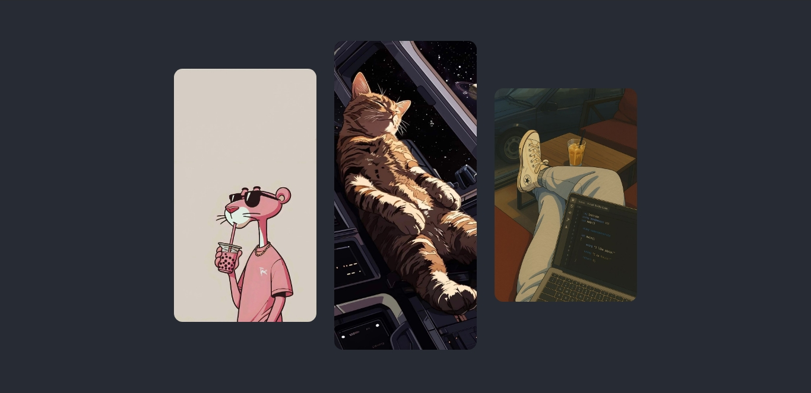
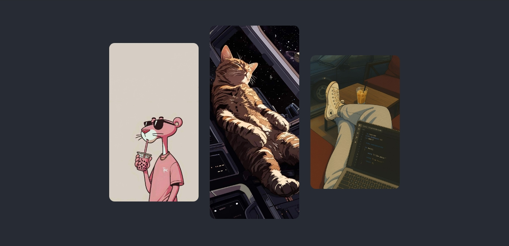
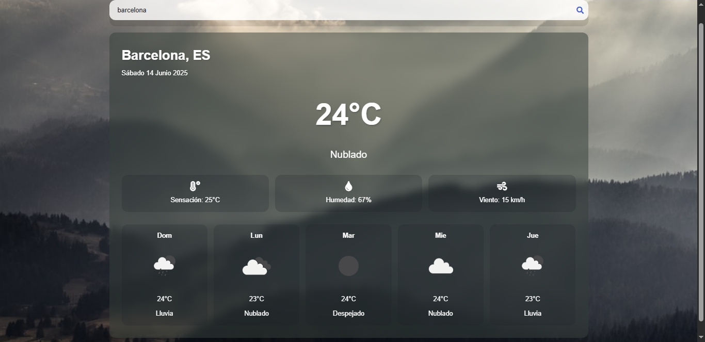

Efecto disolver
Efecto animado que disuelve en particulas una imagen seleccionada.
Ver proyecto Estos son algunos proyectos destacados.
Efecto animado que disuelve en particulas una imagen seleccionada.
Ver proyecto Pagina para ver en tiempo real el clima de cualquier parte del mundo.
Ver proyecto 
Sitio web del hotel "california".

Este proyecto es una página web que simula una tienda en línea especializada en artículos gamer, como periféricos, hardware, accesorios.
Ver proyecto
Pagina que simula camara fotografica para capturar momentos unicos.
Ver proyecto
Este proyecto es una herramienta web que permite crear un código QR personalizado para iniciar un chat en WhatsApp con un número específico, incluyendo un mensaje predefinido..
Ver proyecto